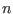
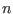
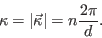
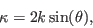
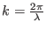
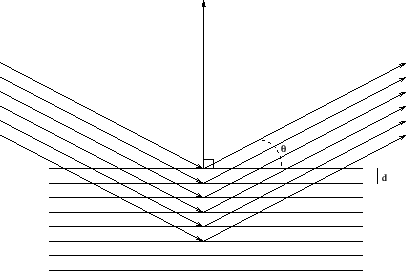

Next: Basic understanding of instrument
Up: McStas neutron ray-trace tutorial
Previous: Goals and tasks
You may recall the Bragg law from your high school physics
giving the scattering condition for
a wave of wavelength  against a series of
lattice planes with lattice spacing , rotated the angle
off the lattice plane normal.  is an integer giving the spectral
order of the scattered wave. In neutron science one often refers to
the scattering vector, of a given reflection, where
against a series of
lattice planes with lattice spacing , rotated the angle
off the lattice plane normal.  is an integer giving the spectral
order of the scattered wave. In neutron science one often refers to
the scattering vector, of a given reflection, where

This gives us the scattering vector formulation of the Bragg law

where
.
The Bragg law / scattering condition is illustrated in Figure 1.
Figure 1:
Illustration of the Bragg Law.
|

|
Most of the neutron processes we will study in this paper are elastic,
meaning that the wavelength of the neutron is unaltered by the process.
Peter Kjær Willendrup
2015-11-12